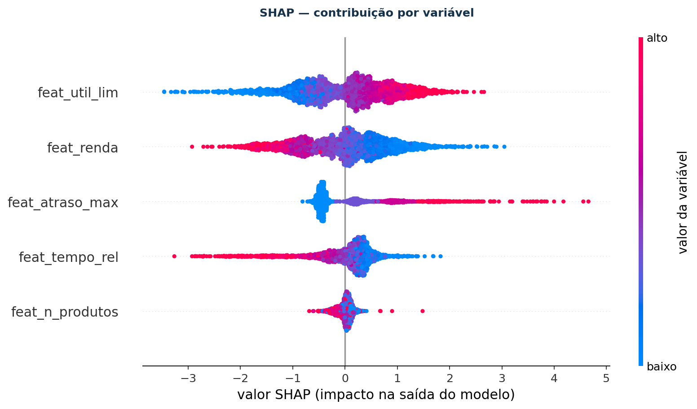
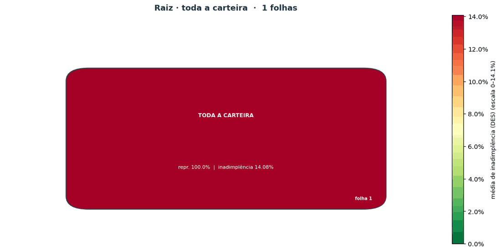
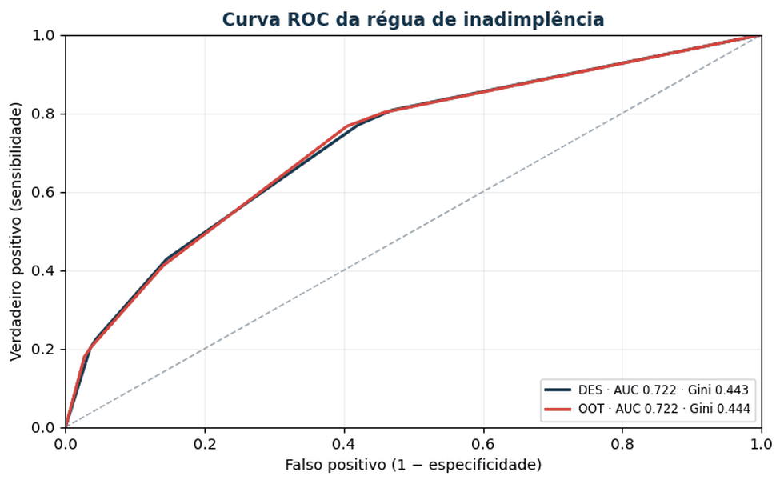
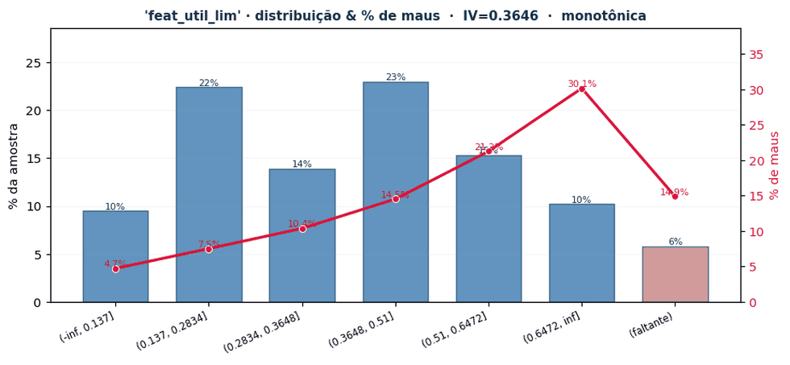
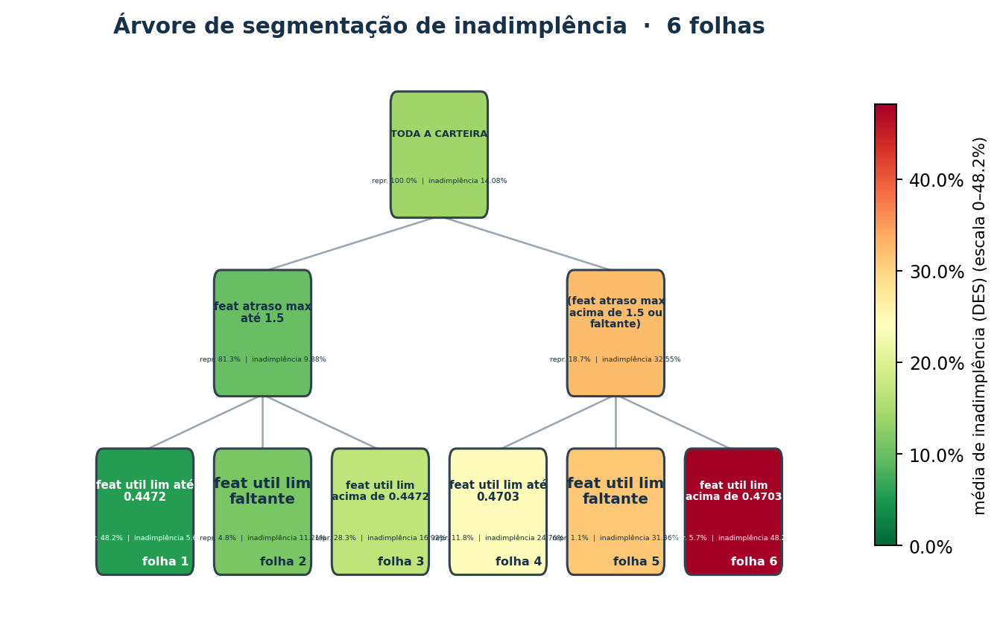
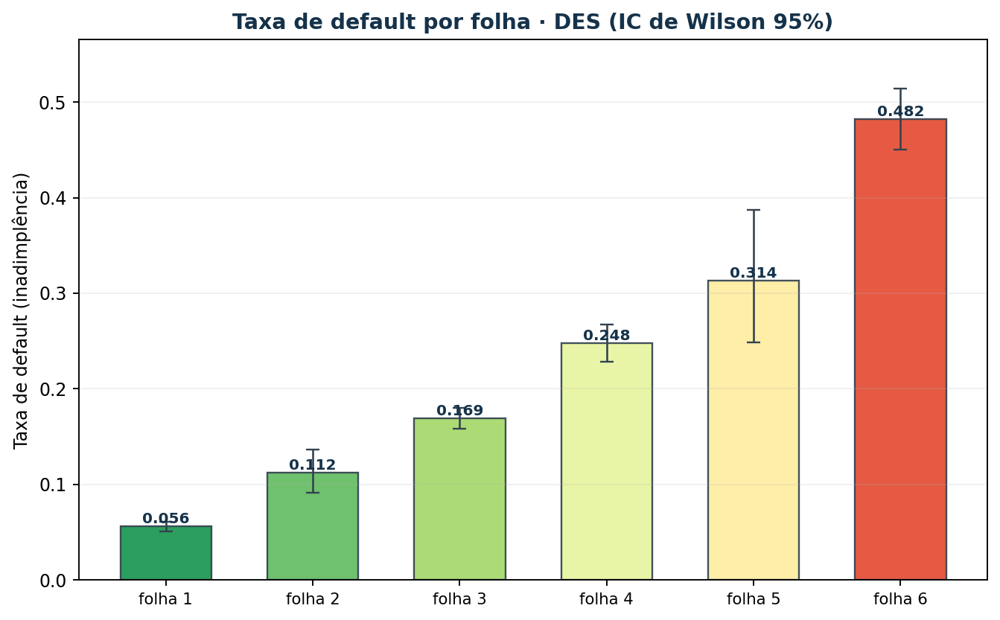
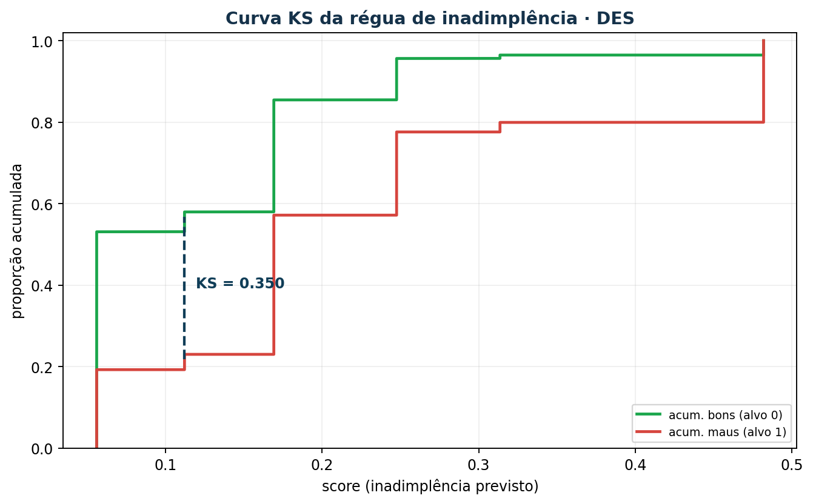
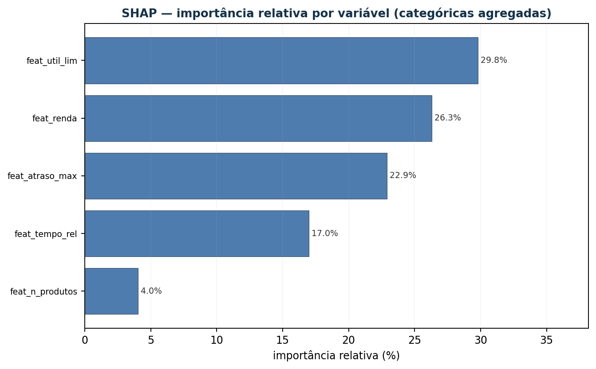
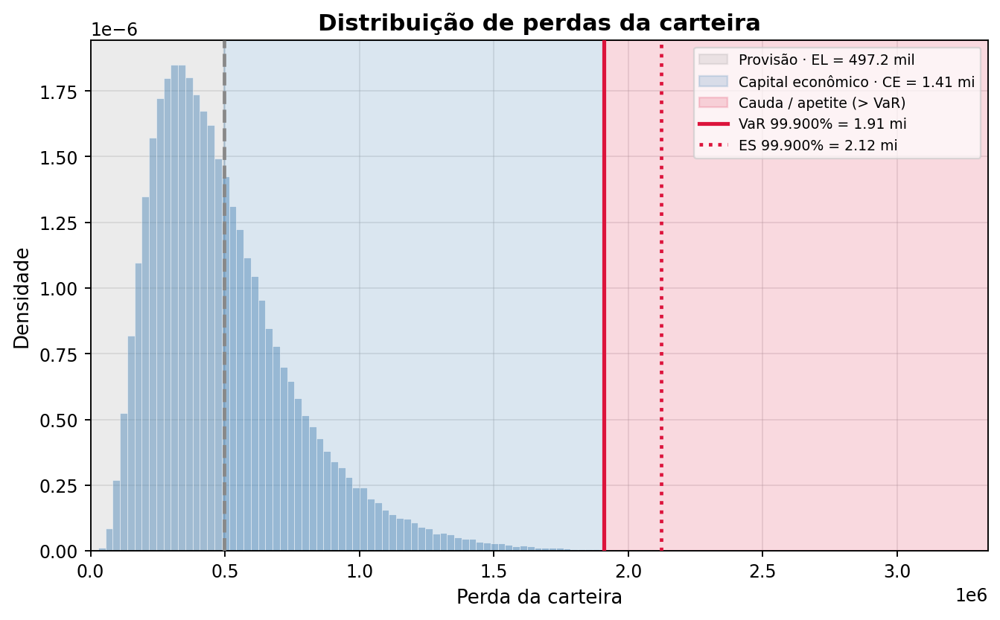
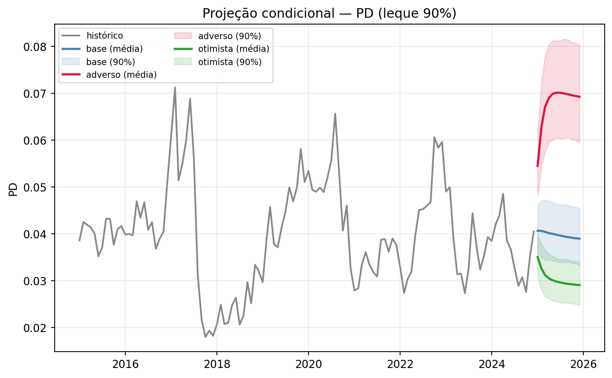

Estatística
O rigor que torna um número defensável: teste de hipótese, estabilidade no tempo e o porquê de cada métrica.
- KS, AUC/Gini, Brier, log loss
- PSI/CSI por safra e por bin
- WoE/IV e binning monotônico
- ADF/KPSS, Ljung-Box, VIF, Chow
A árvore-mundo · ciência de dados de crédito
Uma biblioteca Python de sete módulos isolados para o ciclo completo do
crédito, da concessão à recuperação e do escore ao capital. O núcleo é
pandas puro: roda no seu notebook e no Databricks, com ou sem
pip install.
pip install yggdrasil-project
“Três raízes sustentam a Yggdrasil, e por elas correm as águas que dão vida aos mundos.”
As três raízes
Na cosmologia nórdica, três fontes sagradas alimentam Yggdrasil. Aqui elas viram os três alicerces do repositório, cada um apoiando o outro, todos no mesmo lugar.
O rigor que torna um número defensável: teste de hipótese, estabilidade no tempo e o porquê de cada métrica.
Modelos que entram em produção com governança: rastreados no MLflow, explicáveis e versionados.
Doze notebooks passo a passo, prontos para Jupyter e Databricks. A lógica de produção nunca mora neles.
Escopo aplicado
O foco é crédito de forma ampla. Os mesmos módulos atendem as três frentes, porque o contrato de dados é o mesmo em todas elas.
Aprovação, definição de limites e precificação. Escore, régua de corte e política que dá para explicar linha a linha.
Cobrança e renegociação. Alvos contínuos em [0,1], propensão de acordo e priorização de fila.
Parâmetros PD/LGD/EAD, provisão prospectiva, capital econômico e teste de estresse por cenário.
Os sete ramos
Cada módulo é isolado e importável sozinho. Esteira de ML, EDA e seleção compartilham o contrato
feat_* / dt_ref / amostra / target;
os de risco de crédito têm contratos próprios.
Avaliação completa de um modelo já treinado, orquestrada por MLflow. As amostras DES e OOT recebem análise completa; SIMUL e BACKTEST são scoring-only. Registra métricas, shifts, ratings em quatro metodologias, PSI e SHAP.
MLPipelineColumnConfigratings/monitoring/psimlflow_logger
| métrica | DES | OOT | shift |
|---|---|---|---|
| KS | 0.350 | 0.362 | +3,6% |
| AUC | 0.722 | 0.722 | +0,1% |
| Gini | 0.443 | 0.444 | +0,3% |
| PSI | ref. | 0.043 | estável |
Missing global e por safra, percentis no tempo, relação com o alvo, WoE/IV, importância
univariada e surrogate multivariada, PSI por feature, monotonicidade, outliers, VIF e
detecção de leakage. Tudo consolidado num feature_profile com veredito.
run_feature_edaEDAConfigfeature_profile| feature | IV | PSI | veredito |
|---|---|---|---|
| feat_renda | 0.312 | 0.021 | manter |
| feat_atraso_max | 0.688 | 0.017 | manter |
| feat_util_lim | 0.104 | 0.183 | revisar |
| feat_dias_pgto | 0.941 | 0.009 | leakage |
Seleção por book (grupo de features por prefixo ou palavra-chave) sobre um Spark
DataFrame. O funil vai de missing e variância a importância, redundância (Pearson e
Spearman), Boruta Spark-native e consenso, com backend "spark" ou "driver".
bookborutaconsensoranking global
TreeSegmenter é uma régua sequencial com UI de cinco abas que atende
classificação e regressão pelo mesmo task_type: binning ótimo ou manual,
faltantes em bin própria, notas por folha, IV, PSI/CSI, bootstrap, calibração e backtest.
Exporta CASE WHEN, PDF e Spark.
fit_autosuggest_splitsto_sqldiff_treesapply_spark
ModelSegmenter vai da análise univariada (logodds/WoE, IV, inversão de bins
entre safras) à seleção de variáveis, ao ajuste, às métricas com fórmula e p-valor, ao SHAP
e ao escore que vira ratings. Persistência em JSON mais .model.joblib.
tune_optunaset_modelreport_pdfALGORITHMS
O capital para absorver perdas inesperadas em um ano, no nível do apetite de risco. ASRF/Vasicek analítico, Monte Carlo multifatorial com severidade estocástica, CreditRisk+ por recursão de Panjer e CreditMetrics, mais alocação de Euler e RAROC.
PortfolioSegmentasrf_capitalsimulateeuler_allocation| EL | perda esperada | R$ 1,08 mi |
| VaR | 99,9% | R$ 4,62 mi |
| CE | VaR menos EL | R$ 3,54 mi |
| Div. | benefício | 18,3% |
O eixo temporal, complementar ao transversal: liga as séries agregadas de PD, LGD e CCF às variáveis macro e projeta por cenário. ARDL, ARIMAX, fator Z de Vasicek, beta e fractional logit, VAR/VECM e painel, com champion-challenger, filtro de sinal econômico e walk-forward.
RiskSeriesARDLVasicekZScenarioSetrun_studyA interface em ação
A TreeSegmenterUI constrói a régua dentro do notebook, sem sair do Jupyter nem do
Databricks. Os três GIFs abaixo são saídas reais da biblioteca sobre uma carteira sintética de
24 mil contratos, com 18 safras e amostras DES e OOT.
Cada split é uma decisão sua. A árvore parte da carteira inteira e ganha um nível por vez.

Discriminação, ordenação e calibração, sempre com DES e OOT lado a lado.

A análise univariada dentro da folha, para decidir o corte com evidência e não por intuição.

Galeria
Nenhuma destas figuras foi desenhada à mão: todas saem dos métodos de plot da própria biblioteca. Clique para ver em tamanho cheio.






Hvergelmir · doze nascentes
Todos em notebooks/tutoriais/, prontos para Jupyter e Databricks, com dados
sintéticos embutidos. Se for a sua primeira vez, o 00 dá a visão geral em uma sentada.
task_type.
05Instalação e interfacesComo carregar as UIs local e no Databricks.
06Construtor de modelosA UI do ModelSegmenter, aba por aba.
07Esteira ML + MLflowExperimento, métricas, shifts e artefatos.
08Capital econômicoASRF, Monte Carlo e alocação de Euler.
09Econométricos satéliteARDL, fator Z e projeção por cenários.
10Esteira de seleçãoEtapas plugáveis, funil, relatório e política.
11Interface de séries temporaisSatelliteUI: da estacionariedade ao backtest.
Personalize à sua vontade
Yggdrasil sustenta nove reinos. Clique em um deles para recolorir esta página inteira. A escolha fica salva no seu navegador; o padrão é Ásgard, escuro.
Sete escuros e dois claros. As UIs da biblioteca (TreeSegmenterUI e
ModelSegmenterUI) também têm toggle de tema 🌙.
Instalação
No PyPI a distribuição chama yggdrasil-project, porque o nome yggdrasil
já estava tomado. O nome de import continua yggdrasil.
# do PyPI (versão publicada) pip install yggdrasil-project # do GitHub (versão de desenvolvimento) pip install git+https://github.com/richardguilhermeds/Yggdrasil-Project.git # ou clonando, em modo editável git clone https://github.com/richardguilhermeds/Yggdrasil-Project.git cd Yggdrasil-Project pip install -e ".[dev]" # uso mínimo from yggdrasil import MLPipeline, ColumnConfig cfg = ColumnConfig() # feat_, dt_ref, amostra, target pipe = MLPipeline(cfg, problem_type="classification", ratings=["decis", "quantil", "arvore", "optbin"]) res = pipe.run(df, model=modelo, experiment="/Shared/Yggdrasil/pd_pf") res.metrics_by_sample # métricas por DES/OOT res.shifts # shifts DES -> OOT res.reports # relatório por grupo homogêneo
| extra | para quê |
|---|---|
[dev] | núcleo mais pytest, jupyter e nbconvert |
[ui] | UIs interativas (ipywidgets, anywidget) |
[spark] | régua em PySpark fora do Databricks |
[econometric] | satélites: statsmodels e arch |
[catboost] | CatBoost (LightGBM e XGBoost já no core) |
[pycaret] | treino automatizado via PyCaret |
O layout é flat: o pacote vive na raiz do repositório, então import yggdrasil
funciona mesmo sem instalar, rodando da raiz do clone ou no Databricks Repos, que já põe a
raiz do repo no sys.path.
Localmente o MLflow 3.x exige MLFLOW_ALLOW_FILE_STORE=true para o backend
./mlruns. Os notebooks já definem isso. No Databricks, use o tracking do workspace.
Ragnarök é opcional
Código aberto sob licença MIT. Issues, ideias e pull requests são bem-vindos: a árvore cresce mais rápido com mais raízes.